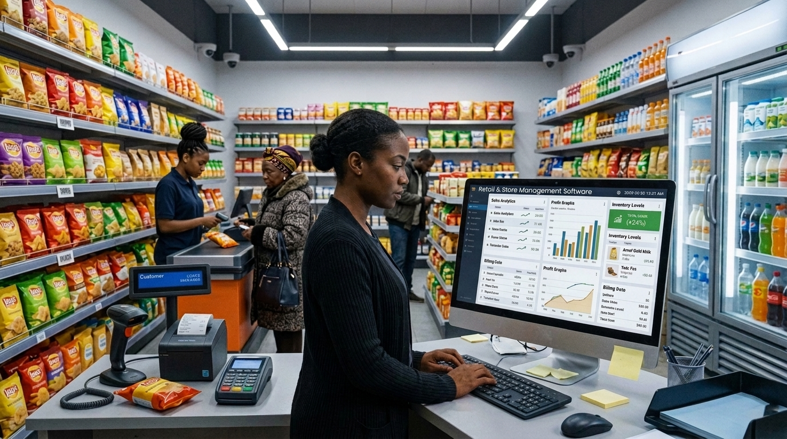
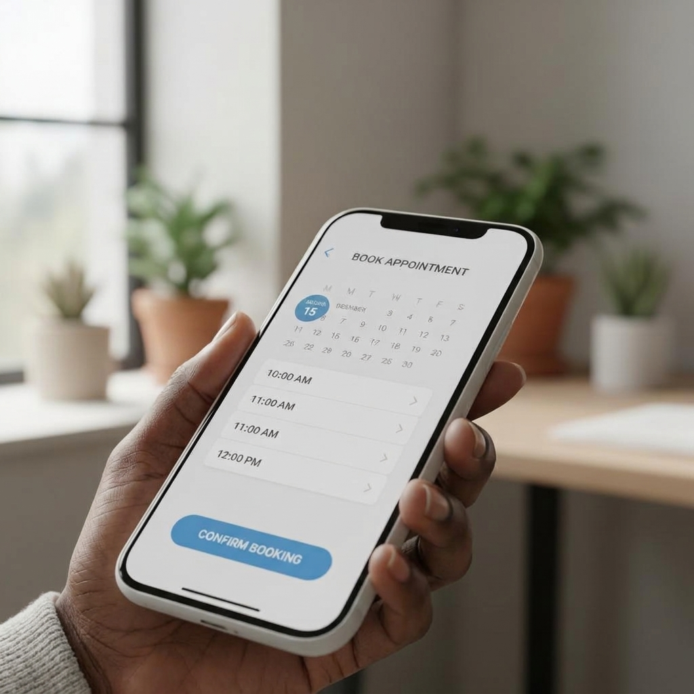

Soluções digitais para pequenos negócios
Sites
Uma presença digital permite que clientes encontrem informações sobre o negócio, produtos, serviços e contactos.

Software
Um negócio também pode utilizar software para organizar as suas atividades internas e reduzir a dependência de processos manuais.

Aplicações
As aplicações podem aproximar os negócios dos seus clientes e facilitar determinadas tarefas, como marcações, pedidos, consultas de informações ou acompanhamento de serviços.
Cada negócio tem necessidades diferentes
Digitalização não significa obrigatoriamente criar uma aplicação complexa ou gastar orçamentos elevados. O caminho mais sensato é identificar a sua dor principal e aplicar a resposta correspondente.
“Quero que os clientes encontrem o meu negócio”
Solução indicada:
site“Quero facilitar marcações”
Solução indicada:
Aplicacao“Quero organizar vendas”
Solução indicada:
software“Quero controlar stock”
Solução indicada:
software“Quero apresentar os meus produtos”
Solução indicada:
site“Quero reduzir tarefas manuais”
Solução indicada:
software